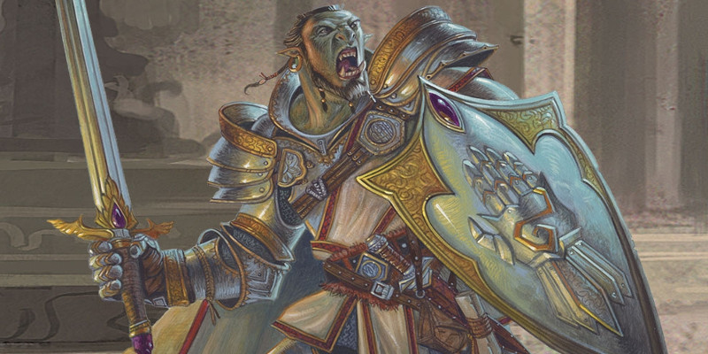

Serments sacrés de paladin
Au niveau 3, un paladin gagne la capacité Serment sacré. Voici des nouvelles options de serments :
- Serment de conquête
- Serment de traîtrise
- Serment de rédemption
- Serment d'héroïsme
- Serment des gardiens
Serment de conquête
Version officielle du Xanathar's Guide to Everything de cette sous-classe publiée initialement dans la rubrique Unearthed Arcana.
Le serment de conquête attire les paladins avides d'obtenir la gloire au combat et de dominer totalement leurs ennemis. Pour ces paladins, instaurer l'ordre n'est pas suffisant. Ils se doivent d'écraser les forces du chaos. Parfois surnommés chevaliers tyrans ou semeurs d'acier, ceux qui prêtent ce serment se regroupent en de sinistres ordres qui vénèrent des divinités ou philosophies de la guerre et du pouvoir. Certains de ces paladins vont encore plus loin et s'associent avec les puissances des Neuf enfers. L'archidiable Bel, seigneur de guerre d'Avernus, compte parmi ses plus fervents soutiens nombre de ces paladins, les célèbres chevaliers de l'enfer [hell knights]. Les chevaliers de l'enfer recouvrent leurs armures de trophées pris aux ennemis vaincus, de sombres avertissements pour ceux qui osent s'opposer à ces paladins et aux lois de leurs seigneurs. Toutefois, des paladins de cet ordre s'opposent souvent aux chevaliers de l'enfer, trouvant que ces derniers sont allés trop loin dans les ténèbres.
Principes de Conquête
Un paladin qui choisit ce serment porte les principes de conquête gravés en haut du bras.
Étouffe la flamme de l'espoir. Il n'est pas suffisant de vaincre l'ennemi au combat. Ta victoire doit être si écrasante qu'elle doit aussi détruire chez l'ennemi sa volonté de se battre pour toujours. Une épée peut mettre fin à une vie. La peur peut mettre fin à un empire.
Règne d'une main de fer. Une fois la conquête réalisée, ne tolère aucune contestation. Ta parole est loi. Ceux qui y obéissent doivent être récompensés. Les autres doivent être punis et servir d'exemple à tous ceux qui voudraient les suivre.
La force par-dessus tout. Tu devras régner jusqu'à ce qu'un plus puissant que toi n'apparaisse. Alors il te faudra devenir encore plus puissant et surpasser le défi... ou n'être plus rien.
Sorts de serment
Vous gagnez des sorts de serment aux niveaux de paladin indiqués.
| Niveau de paladin |
Sorts |
| 3 | armure d’Agathys, injonction |
| 5 | arme spirituelle, immobilisation de personne |
| 9 | malédiction, peur |
| 13 | domination de bête, peau de pierre |
| 17 | domination de personne, brume mortelle |
Conduit divin
Quand vous prêtez votre serment au niveau 3, vous gagnez les deux options suivantes de Conduit divin.
Présence conquérante. Vous pouvez utiliser votreConduit divin afin d'exalter une présence terrifiante. Par une action, vous forcez toutes les créatures de votre choix que vous pouvez voir dans un rayon de 9 mètres autour de vous à faire un jet de sauvegarde de Sagesse. En cas d'échec, vous effrayez la créature durant 1 minute. La créature effrayée peut relancer son jet de sauvegarde à la fin de chacun de ses tours, et mettre un terme à cet effet en cas de succès.
Frappe guidée. Vous pouvez utiliser votre Conduit divin afin de frapper avec une précision surnaturelle. Lorsque vous faites un jet d’attaque, vous pouvez utiliser votre Conduit divin pour ajouter un bonus de +10 au jet. Vous pouvez choisir d'ajouter ce bonus une fois le jet effectué, mais avant que le MD ne vous dise si l'attaque touche ou non.
Aura de conquête
À partir du niveau 7, une aura menaçante émane de vous tant que vous n'êtes pas incapable d'agir. Cette aura s'étend sur un rayon de 3 mètres autour de vous, mais est bloquée en cas d'abris total. Si vous effrayez une créature, sa vitesse est réduite à 0 tant qu'elle est située dans l'aura, et cette créature prend des dégâts psychiques égaux à la moitié de votre niveau de paladin si elle commence son tour à l'intérieur de l'aura. Au niveau 18, l'effet de l'aura s'étend à 9 mètres.
Blâme méprisant
À partir du niveau 15, ceux qui osent vous frapper sont psychologiquement punis pour leur audace. Chaque fois qu'une créature vous touche avec une attaque, elle prend des dégâts psychiques égaux à votre modificateur de Charisme (minimum 1) si vous n'êtes pas incapable d'agir.
Conquérant invincible
Au niveau 20, vous pouvez réaliser d'extraordinaires prouesses martiales. Au prix d'une action, vous pouvez devenir magiquement un avatar de conquête et obtenir les avantages suivants durant 1 minute :
- Vous gagnez la résistance à tous les types de dégâts.
- Quand, pendant votre tour, vous utilisez l'action Attaquer, vous avez droit à une attaque supplémentaire durant cette même action.
- Vos attaques au corps à corps avec une arme portent un coup critique pour un résultat du dé de 19 ou 20.
Une fois ce pouvoir utilisé, vous devez terminer un repos long avant de pouvoir le réutiliser.
Serment de traîtrise
PALADIN DÉCHUS
Le serment de traîtrise est une option pour un paladin qui s'est éloigné d'un autre serment sacré ou qui a rejeté la vie traditionnelle de paladin. Cette option existe en plus du Oathbreaker présenté dans le Dungeon Master's Guide. Les MD peuvent utiliser ces 2 options afin de créer des paladins maléfiques ou déchus. Si vous passez d'un autre serment à celui-ci, ou vice-versa, remplacez toutes les caractéristiques de l'ancien serment par le nouveau.
Serment de traîtrise est le chemin suivi par des paladins parjures à leur précédent serment ou par ceux intéressés uniquement par leur propre puissance et survie. Communément appelés les chevaliers noirs [blackguards], ces combattants profanes ne sont fidèles qu'à eux-mêmes. Quiconque est suffisamment désespéré pour suivre de tels individus fourbes, le fait car ces paladins possèdent un grand pouvoir. Ceux qui les suivent sans tomber dans le piège de leur trahison espèrent pouvoir se livrer à des actes de violence gratuite et accumuler de grands trésors. Nombre de ces paladins rendent hommage aux seigneurs démons, tout particulièrement à Grazz't et Orcus. Mêmes les Seigneurs de l'enfer rechignent à s'allier avec ces champions du chaos, mais parfois Baalzebul et Glasya éprouvent un certain attrait pour ceux qui manient le double-jeu et la traîtrise.
Principes de Traîtrise
Un paladin qui choisit le serment de traîtrise ne prête allégeance à personne. Il n'y a aucun principe lié à ce serment car il n'a aucune substance. Ceux qui ont été malchanceux au point d'avoir côtoyés les chevaliers noirs ont pu observer que leurs uniques motivations sont le pouvoir et leur propre sécurité, en particulier s'ils peuvent être obtenus aux dépends des autres.
Sorts de serment
Vous gagnez des sorts de serment aux niveaux de paladin indiqués.
| Niveau de paladin |
Sorts |
| 3 | charme-personne, repli expéditif |
| 5 | image miroir, invisibilité |
| 9 | forme gazeuse, hâte |
| 13 | confusion, invisibilité supérieure |
| 17 | domination de personne, passe-muraille |
Conduit divin
Quand vous prêtez votre serment au niveau 3, vous gagnez les deux options suivantes de Conduit divin.
Invocation de double. Au prix d'une action, vous créez une illusion visuelle de vous-même qui dure 1 minute ou jusqu'à ce que vous perdiez votre concentration (comme si vous vous concentriez sur un sort). L'illusion apparaît dans un endroit inoccupé de votre choix et que vous pouvez voir, à 9 mètres de vous maximum. L'illusion vous ressemble totalement. Elle est silencieuse, possède votre taille, est incorporelle et n'occupe pas son espace. Elle n'est pas affectée par les attaques et les dégâts. Au prix d'une action bonus durant votre tour, vous pouvez déplacer l'illusion de 9 mètres vers un endroit que vous pouvez voir, mais elle doit rester à 36 mètres de vous maximum. Pendant cette durée, vous pouvez lancer des sorts comme si vous étiez à la position de l'illusion, mais en utilisant vos propres sens. De plus, quand vous et l'illusion êtes tous deux à 1,50 mètre ou moins d'une créature qui peut voir l'illusion, vous obtenez un avantage à vos jets d'attaque contre cette créature tellement l'illusion est perturbante.
Frappe empoisonnée. Vous pouvez utiliser votre Conduit divin afin de rendre vos armes encore plus mortelles. Au prix d'une action bonus, vous pouvez toucher une arme ou une munition et invoquer dessus un poison spécial. Le poison est présent durant 1 minute. La prochaine fois que vous toucherez une cible avec cette arme ou cette munition, la cible subira des dégâts de poison immédiatement après l‘attaque. Les dégâts du poison sont de 2d10 + votre niveau de paladin, ou 20 + votre niveau de paladin si vous aviez un avantage lors de votre jet d'attaque.
Aura de traîtrise
À partir du niveau 7, une aura de discorde émane de vous et vous procure les avantages suivants.
Abattre le troupeau. Vous obtenez un avantage à vos jets d'attaque au corps à corps contre toute créature qui a au moins un de ses alliés dans un rayon de 1,50 mètre autour d'elle.
Frappe du traître. Si une créature située dans un rayon de 1,50 mètre autour de vous manque son jet d'attaque au corps à corps contre vous, vous pouvez utiliser votre réaction pour forcer l'attaquant à relancer son jet d’attaque contre une créature de votre choix située à 1,50 mètre maximum de l'attaquant. Cette capacité échoue mais est consommée si l'attaquant est immunisé à l'état charmé. Vous pouvez utiliser cette capacité trois fois. Vous regagnez les utilisations consommées lorsque vous terminez un repos court ou long.
Évasion du chevalier noir
À partir du niveau 15, vous obtenez la capacité d'échapper à vos ennemis. Immédiatement après avoir été touché par une attaque, vous pouvez utiliser votre réaction pour devenir invisible et vous téléporter à un endroit que vous pouvez voir situé à 18 mètres maximum. Vous restez invisible jusqu'à la fin de votre prochain tour ou jusqu'à ce que vous attaquiez, fassiez des dégâts ou forciez une créature à faire un jet de sauvegarde. Une fois ce pouvoir utilisé, vous devez terminer un repos court ou long avant de pouvoir le réutiliser.
Icone de la tromperie
Au niveau 20, vous gagnez la capacité de faire émaner des sentiments de trahison. Au prix d'une action, vous devenez par magie un avatar de la tromperie et obtenez pour une minute les avantages suivants :
- Vous êtes invisible.
- Si une créature vous inflige des dégâts durant son tour, elle doit réussir un jet de sauvegarde de Sagesse (DD égal au DD de sauvegarde de vos sorts) ou bien vous contrôlez sa prochaine action, mais uniquement si vous n'êtes pas incapable d'agir lorsqu'elle prendra son action. La créature réussit automatiquement son jet de sauvegarde si elle est immunisée aux charmes.
- Si vous avez un avantage à votre jet d’attaque, vous obtenez un bonus aux dégâts égal à votre niveau de paladin.
Une fois ce pouvoir utilisé, vous devez terminer un repos long avant de pouvoir le réutiliser.
Serment de rédemption
Version officielle du Xanathar's Guide to Everything de cette sous-classe publiée initialement dans la rubrique Unearthed Arcana.
Le serment de rédemption place un paladin sur un chemin difficile, celui qui exige qu'un guerrier saint n'utilise la violence qu'en dernier recours. Les paladins qui se consacrent à ce serment croient que toute personne peut se racheter et que tout le monde peut emprunter le chemin de la bienveillance et de la justice. Ces paladins se dressent face à des créatures mauvaises dans l'espoir de les voir se tourner vers la lumière, et ils ne les tuent que lorsque cette action permet clairement de sauver d'autres vies. Les paladins qui suivent ce chemin sont connus comme les rédempteurs. Mais bien qu'idéalistes, ils ne sont pas stupides. Les rédempteurs savent que les morts-vivants, les démons, les diables et autres menaces surnaturelles sont intrinsèquement mauvais. Contre de tels ennemis, ces paladins n'hésitent pas à utiliser leurs armes et leurs sorts. Pourtant, les rédempteurs continuent de prier pour que, un jour, même ces créatures pleines de haine puissent penser à leur rédemption.
Principes de Rédemption
Les principes du serment de rédemption porte un paladin à un haut niveau de paix et de justice.
Paix. La violence est l'arme du dernier recours. La diplomatie et la compréhension sont la voie pour une paix durable.
Innocence. Tout le monde débute dans la vie en étant innocent, et c'est l'environnement ou l'influence des forces obscures qui conduit vers le Mal. En montrant l'exemple, et en travaillant afin de guérir les plaies d'un monde profondément blessé, vous pouvez remettre n'importe qui sur le droit chemin.
Patience. Changer prend du temps. Ceux qui ont emprunté des chemins malfaisants doivent être rappelés à l'ordre pour redevenir honnêtes et bons. Une fois que la graine de la justice est semée dans une créature, vous devez travailler jour après jour pour lui permettre de survivre et ensuite de s'épanouir.
Sagesse. Votre cœur et votre esprit doivent rester éveillés, car il est possible que vous soyez obligé d'admettre la défaite. Si toute créature peut être réhabilitée, certaines sont allées si loin sur le chemin du mal que vous n'aurez d'autre choix que de mettre fin à leur vie. Une telle action doit être soigneusement pensée et ses conséquences bien comprises, mais une fois la décision prise, suivez la en sachant que votre chemin est juste.
Sorts de serment
Vous gagnez des sorts de serment aux niveaux de paladin indiqués.
| Niveau de paladin |
Sorts |
| 3 | sanctuaire, sommeil |
| 5 | apaisement des émotions, rayon affaiblissant |
| 9 | contresort, motif hypnotique |
| 13 | peau de pierre, sphère résiliente d'Otiluke |
| 17 | immobilisation de monstre, mur de force |
Conduit divin
Quand vous prêtez votre serment au niveau 3, vous gagnez les deux options suivantes de Conduit divin.
Émissaire de paix. Vous pouvez utiliser votre Conduit divin pour augmenter votre présence grâce à la puissance divine. Par une action bonus, vous vous accordez un bonus de +5 à votre prochain jet de Charisme (Persuasion) dans les prochaines 10 minutes.
Blâme du violent. Vous pouvez utiliser votre Conduit divin pour réprimander ceux qui utilisent la violence. Par une réaction lorsqu'un ennemi dans un rayon de 9 mètres autour de vous inflige des dégâts avec une attaque au corps à corps à une créature autre que vous-même, vous forcez cet attaquant à faire un jet de sauvegarde de Sagesse. En cas d'échec, l'attaquant subit un nombre de dégâts radiants égal aux dégâts qu'il vient d'infliger. En cas de sauvegarde réussie, il ne prend que la moitié des dommages.
Aura du gardien
À partir du niveau 7, vous pouvez protéger les autres des dommages au prix de votre propre santé. Par une réaction lorsqu'une créature dans un rayon de 3 mètres autour de vous subit des dégâts, vous pouvez prendre par magie ces dégâts à la place de la créature. Cette capacité ne transfère aucun autre effet qui pourrait accompagner les dégâts, et ces dégâts ne peuvent être réduits en aucune façon. Au niveau 18, la portée de cette aura passe à 9 mètres.
Esprit protecteur
À partir du niveau 15, une présence sacrée soigne vos blessures au combat. Vous récupérez un nombre de points de vie égal à 1d6 + la moitié de votre niveau de paladin si vous terminez votre tour au combat avec moins de la moitié de vos points de vie et que vous n'êtes pas incapable d'agir.
Émissaire de la rédemption
Au niveau 20, vous devenez un avatar de la paix, ce qui vous donne deux avantages :
- Vous obtenez la résistance à tous les dégâts infligés par d'autres créatures (leurs attaques, leurs sorts et autres effets).
- Chaque fois qu'une créature vous touche, elle prend des dégâts radiants égaux à la moitié de la quantité qu'elle vous a infligée.
Si vous attaquez une créature, lui lancez un sort ou lui infligez des dégâts par tout autre moyen que par cette capacité, aucun de ces deux avantages ne fonctionne contre cette créature jusqu'à ce que vous ayez terminé un repos long.
Serment d'héroïsme
Le serment d'héroïsme est l'affirmation d'un destin tracé par les mains d'une divinité. Pour une raison, un dieu ou un groupe de dieux vous ont inclus dans leurs machinations. Vous n'êtes pas un héros réticent, vous êtes un héros convaincu de devoir réaliser de grandes choses. Vous vous entraînez avec diligence, sculptez votre corps et affinez vos compétences afin d'être prêt quand le destin vous appellera.
Principes de l'héroïsme
Les principes du serment d'héroïsme reflètent l'engagement du paladin à remplir sa vocation à devenir un héros de légende.
L'action plus que les mots. Il faut s'efforcer d'être connu pour ses faits, pas pour ses mots.
Les défis ne sont que des tests. Chaque épreuve sert à tester vos capacités et à endurcir votre résolution.
Embrasser le destin. Vous n'avez pas choisi ce chemin, mais il vous revient de l'emprunter. Et il fera de vous une légende.
Aiguiser le corps. Comme une pierre brute, le corps doit être travaillé pour pouvoir libérer son potentiel.
Sorts de serment
Vous gagnez des sorts de serment aux niveaux de paladin indiqués.
| Niveau de paladin |
Sorts |
| 3 | repli expéditif, éclair guidant |
| 5 | amélioration de caractéristique, discours captivant |
| 9 | hâte, protection contre une énergie |
| 13 | compulsion, liberté de mouvement |
| 17 | communion, invocation de volée |
Conduit divin
Quand vous prêtez votre serment au niveau 3, vous gagnez les deux options suivantes de Conduit divin.
Athlète hors pair. Vous pouvez utiliser votre Conduit divin pour augmenter votre athlétisme par une faveur divine. Par une action bonus, vous gagnez un avantage à tous vos jets de Force (Athlétisme) et Dextérité (Acrobaties) durant les 10 prochaines minutes.
Frappe légendaire. Vous pouvez utiliser votre Conduit divin par une action bonus pour guider vos attaques : durant 1 minute, vos attaques avec une arme infligent un coup critique pour un résultat de 19 ou 20 sur le d20.
Action puissante
À partir du niveau 7, vos actions sur le champ de bataille peuvent surnaturellement soutenir vos alliés et démoraliser vos ennemis. Chaque fois que vous infligez un coup critique ou réduisez une créature à 0 point de vie, vous pouvez choisir une ou plusieurs créatures que vous pouvez voir dans un rayon de 9 mètres autour de vous, jusqu'à un nombre égal à votre modificateur de Charisme (minimum une créature). Toutes les créatures choisies sont affectées par l'un des effets suivants de votre choix :
- La créature gagne des points de vie temporaires égaux à 1d6 + votre modificateur de Charisme (minimum 1 point de vie temporaire).
- La créature doit réussir un jet de sauvegarde de Sagesse contre le DD de vos sorts ou être effrayée jusqu'au début de votre prochain tour.
Une fois que vous avez utilisé cette capacité, vous ne pouvez plus l'utiliser avant le début de votre prochain tour.
Défense glorieuse
À partir du niveau 15, votre éclat béni sur le champ de bataille peut faire rater une attaque. Quand une créature que vous pouvez voir vous touche avec un jet d'attaque, vous pouvez utiliser votre réaction pour gagner un bonus à la CA contre cette attaque, ce qui peut finalement faire échouer l'attaque. Le bonus est égal à votre modificateur de Charisme (minimum +1). Si l'attaque rate, vous pouvez réaliser une attaque avec une arme contre l'attaquant dans le cadre de cette réaction.
Mythe vivant
Au niveau 20, vous pouvez maintenant gagner les pouvoirs que vous prêtent les légendes, qu'elles soient vraies ou exagérées, suite à vos grandes réalisations. Par une action bonus, vous gagnez les avantages suivants pendant 10 minutes :
- Vous êtes béni d'un charme d'Outremonde et avez un avantage à tous vos jets de Charisme.
- Une fois lors de chacun de vos tours, lorsque vous effectuez une attaque avec une arme et ratez, vous pouvez faire en sorte que l'attaque touche.
- Si vous échouez à un jet de sauvegarde, vous pouvez utiliser votre réaction pour réussir ce jet.
Une fois que vous avez utilisé cette capacité, vous devez terminer un repos court ou long avant de pouvoir l'utiliser à nouveau.
Serment des gardiens
Les paladins qui prêtent le serment des gardiens cherchent à protéger le royaume des mortels des prédations de créatures extraplanaires, dont beaucoup sont capables de ravages contre des soldats mortels. Ainsi, les gardiens affinent leur esprit et leur corps pour se convertir en l'arme ultime contre de telles menaces. Les paladins qui suivent le serment des gardiens sont toujours vigilants pour ce qui est de détecter l'influence des forces extraplanaires, créant souvent un réseau d'espions et d'informateurs qui leur permet de recueillir des informations sur des cultes suspects. Pour un gardien, avoir une saine suspicion et une conscience de son environnement est aussi naturel que de porter une armure au combat.
Principes des gardiens
Un paladin qui adopte le serment des gardiens jure de protéger le royaume des mortels des menaces d'Outremonde.
Vigilance. Les menaces auxquelles vous êtes confronté sont rusées, puissantes et subversives. Soyez toujours vigilant face à leur corruption.
Fidélité. N'acceptez jamais de cadeaux ou de faveurs de la part de fiélons ou de ceux qui les accompagnent. Restez fidèle à votre ordre, à vos camarades et à votre devoir.
Discipline. Vous êtes le bouclier contre les terreurs sans fin qui viennent d'au-delà des étoiles. Votre lame doit toujours être affûtée et votre esprit soucieux de survivre à l'au-delà.
Sorts de serment
Vous gagnez des sorts de serment aux niveaux de paladin indiqués.
| Niveau de paladin |
Sorts |
| 3 | alarme, orbe chromatique |
| 5 | augure, rayon de lune |
| 9 | contresort, antidétection |
| 13 | aura de pureté, bannissement |
| 17 | immobilisation de monstre, sanctification |
Conduit divin
Capacité du serment des gardiens de niveau 3
Quand vous prêtez votre serment au niveau 3, vous gagnez les deux options suivantes de Conduit divin.
Volonté du gardien. Vous pouvez utiliser votre Conduit divin pour investir votre présence du pouvoir protecteur de votre foi. Par une action, vous pouvez choisir un nombre de créatures que vous pouvez voir dans un rayon de 9 mètres autour de vous, jusqu'à un nombre égal à votre modificateur de Charisme (minimum une créature). Pendant 1 minute, toutes les créatures choisies ont un avantage aux jets de sauvegarde d'Intelligence, de Sagesse et de Charisme.
Conspuer l'extraplanaire. Vous pouvez utiliser votre Conduit divin pour châtier des êtres surnaturels. Par une action, vous présentez votre symbole sacré et tout élémentaire, fée, fiélon ou aberration à 9 mètres ou moins de vous qui peut vous entendre doit effectuer un jet de sauvegarde de Sagesse. En cas d'échec à la sauvegarde, la créature est repoussée durant 1 minute ou jusqu'à ce qu'elle subisse des dégâts.
Une créature repoussée doit passer ses tours à essayer de s'éloigner le plus loin possible de vous, et elle ne peut se déplacer de son plein gré dans un espace à 9 mètres ou moins de vous. En ce qui concerne son action, elle ne peut utiliser que l'action Foncer ou essayer d'échapper à un effet qui l'empêche de bouger. Si elle n'a nulle part où aller, la créature peut utiliser l'action Esquiver.
Aura de la sentinelle
Capacité du serment des gardiens de niveaux 7 et 18
Tant que vous n'êtes pas incapable d'agir, vous émettez une aura de vigilance. Lorsque vous, ou toute autre créature de votre choix à 3 mètres ou moins de vous, lancez l'initiative, vous gagnez chacun un bonus d'initiative égal à votre modificateur de Charisme (minimum +1). Au niveau 18, la portée de cette aura passe à 9 mètres.
Représailles attentives
Capacité du serment des gardiens de niveau 15
Vous avez appris à châtier magiquement quiconque ose lancer des sorts indésirables contre vous et vos protégés. Chaque fois que vous ou une créature que vous pouvez voir à 9 mètres ou moins de vous réussit un jet de sauvegarde contre un sort, vous pouvez utiliser votre réaction pour infliger au lanceur de sorts des dégâts de force égaux à 2d8 + votre modificateur de Charisme .
Rempart mortel
Capacité du serment des gardiens de niveau 20
Une étincelle du pouvoir de votre divinité naît en vous pour défendre votre serment sacré. Par une action bonus, vous bénéficiez des avantages suivants pendant 1 minute :
- Vous obtenez vision véritable dans un rayon de 36 mètres.
- Vous avez un avantage aux jets d'attaque contre les élémentaires, les fées, les fiélons et les aberrations.
- Lorsque vous touchez une créature lors d'une attaque et lui infligez des blessures, vous pouvez également la forcer à effectuer un jet de sauvegarde de Charisme. En cas d'échec à la sauvegarde, la créature est magiquement bannie et renvoyée sur son plan natal d'existence si elle n'y était pas. En cas de sauvegarde réussie, la créature ne peut plus être bannie par cette capacité durant 24 heures.
Une fois que vous avez utilisé cette action bonus, vous ne pouvez plus la réutiliser avant d'avoir terminé un repos long.

Traduit par toon et blueace